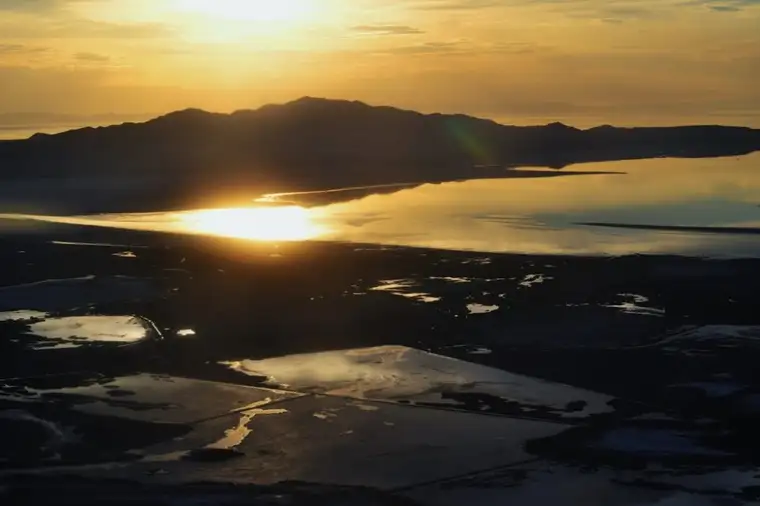

It’s not the most colorful sunset I’ve ever captured, but it’s one I’ll remember for a long time.
{kind=link}
Though this may just look like puddles in front of a mountain range, it’s more than that. It’s Salt Lake from a plane at sunset. And not long ago, it was a gift I received during a trip that had me diverted to Utah on my way home.
My trip was over, for the most part. I had just one leg left, and it was late in the day. I was letting down, preparing for an adventure’s end, and at the same time, looking forward to seeing the smiles of my family and crawling into my own bed.
{kind=link}
These were the things on my mind as I boarded the plane, but as we waited for takeoff, it occurred to me that, of all times in the day, we’d likely be leaving this beautiful spot at my favorite time in the evening — the time when the world is aglow with dusk. It’s a magical time when you’re on the ground, and as I quickly learned, even more so hundreds of feet in the air.
{kind=link}

It was more than magical. It was mystical and I counted it as straight from God himself.
{kind=link}
At one point I could even make out the crevices in the mountains. Wow…
{kind=link}
{kind=link}
Now, I’m off to follow more sunsets — the summer kind. In order to really absorb them, I’m going to take one of those blogging breaks that always serves me so well. Thanks for understanding.
{kind=link}
I trust that while I’m on break, you’ll be relishing this precious time of year, too. I’ll come back in a while, post-sunset gazing, eager to see who’s still around.
May your summertime moments be full of unsolicited surprises.
Peace Garden Writer